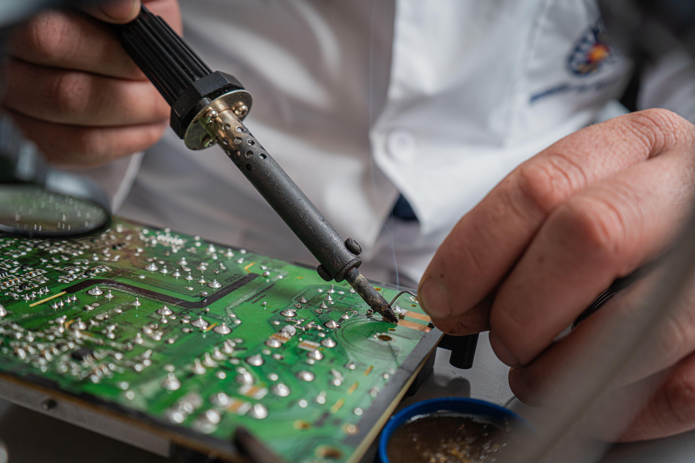

Oferecemos assistência informática para ajudar estudantes, famílias e pequenos negócios a utilizar os seus equipamentos com mais segurança e eficiência.

Identificação de falhas e diagnóstico de problemas de hardware e software, procurando recuperar o bom funcionamento do equipamento.
Pedir AssistênciaInstalação e configuração de aplicações úteis para a produtividade, os estudos e as tarefas diárias.
Pedir AssistênciaInstalação, configuração e atualização de sistemas operativos compatíveis com os equipamentos.
Pedir Assistência
Verificação de ameaças, ajuda na remoção de software malicioso e orientação sobre proteção de dados.
Pedir AssistênciaCuidados de limpeza e verificações de software que ajudam a manter os equipamentos em boas condições.
Pedir AssistênciaConfiguração básica de redes locais, ligação de dispositivos e resolução de problemas comuns de conectividade.
Pedir AssistênciaExplica-nos o teu problema e indica o tipo de assistência de que precisas.
Entrar em contacto